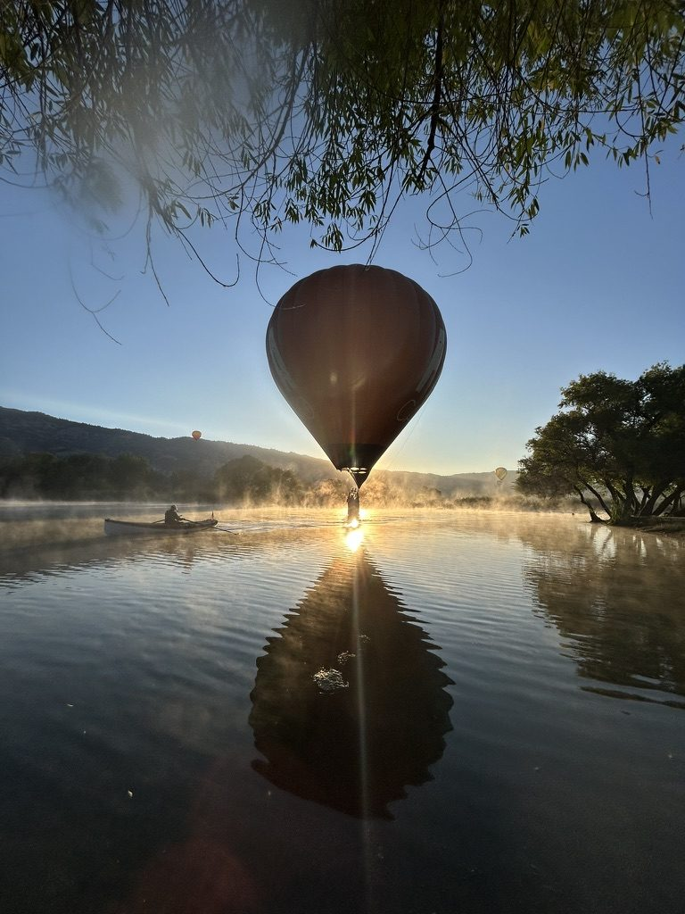
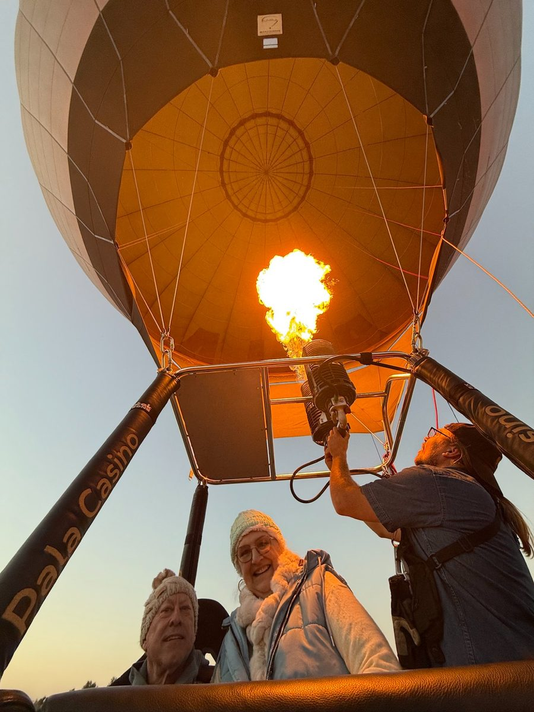
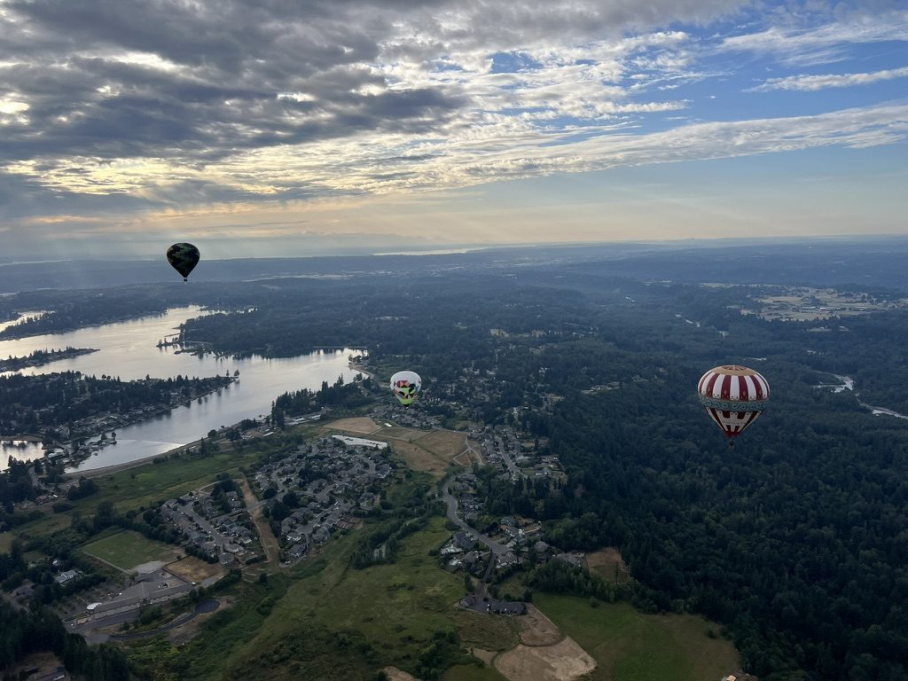
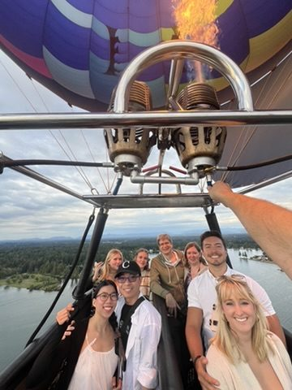
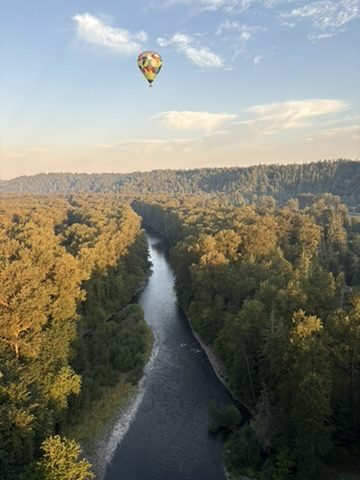
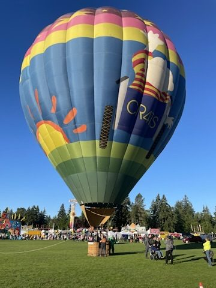
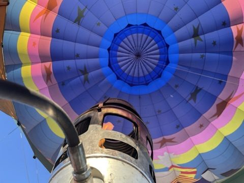
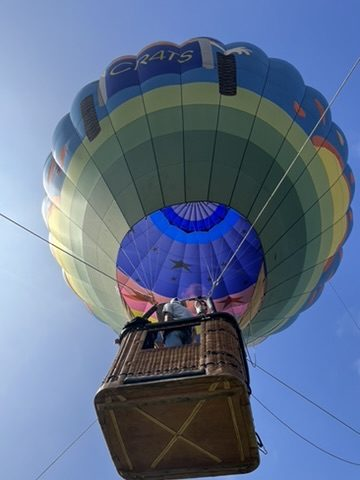
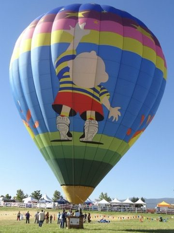

Reach for the Stars Foundation
Wheelchair-accessible hot air balloon experiences for individuals living with paralysis — fully subsidized through the Christopher & Dana Reeve Foundation Quality of Life Grants Program.

Source: Reach for the Stars Foundation operational records, 2000–2026
The Experience
From a balloon basket, the boundaries that define daily life for individuals with paralysis dissolve. There are no curbs, no stairs, no barriers — only open sky, breathtaking views, and the profound sense of freedom that comes from floating above the world.

As the burner fires and the balloon lifts, the world below softens. The basket — featuring the largest door on any FAA-certified balloon — accommodates wheelchairs, hospital beds, and adaptive seating. Every flight is private, every accommodation individualized.
Each participant receives a private hot air balloon flight in our wheelchair-accessible basket — featuring the largest door on any FAA-certified balloon.
Pre-flight orientation, individualized accommodations, and full ground crew support for safe and dignified boarding, flight, and landing.
A caregiver or family member can fly alongside the participant, making this a shared experience that creates lasting memories for everyone.
Each flight provides roughly one hour of flight time over the scenic landscapes of Temecula Wine Country, CA, or Enumclaw, WA.
Value
Market rate for a private
hot air balloon flight
Grant rate per flight
through Sky Without Limits
Every $500 awarded directly translates to one private flight for a person with paralysis. 100% of grant funds go to flight operations.
Market pricing based on published 2025–2026 rates from Big Red Balloon, Seattle Ballooning, Balloon Quest Inc., and Above the Clouds Inc.
Flexible Allocation
We offer the foundation flexibility in how grant funds are used — because the best program is one designed in collaboration.
Direct 100% of funding to flights at $500 each — up to 49 individuals served at maximum funding.
Allocate a portion to transportation costs for participants outside our launch areas, ensuring geography never prevents someone from flying.
Structure part of the grant as an application-based scholarship, inviting individuals with paralysis to apply for a fully funded flight.
Participant Voices
"I am a 26 year old wheelchair user that loves adventure and trying new things. Being able to go up in a hot air balloon has always been something I have wanted to do and Reach 4 the Stars made this dream a reality. Being able to sail across the clouds and enjoy the peaceful scenery was breathtaking and a memory I will cherish forever."Andrea Rivera — wheelchair user and program participant
Source: reach4thestars.org/testimonials
"We lifted off and I know Tom could feel it when we lifted. I gave him two thumbs up and said, 'We did it. We are going for our ride in the Hot Air Balloon.' He gave me the biggest smile! Was that ever exciting for me to see him smile like that!"Mary Louise — wife and caregiver, celebrating their 47th wedding anniversary
Source: reach4thestars.org/testimonials
"Excellent to accommodate my husband with his wheelchair for the ride, made it as easy as possible for us so that we would enjoy our adventure in the air. Highly recommend!"Ortensia Teddy — wife and caregiver of wheelchair user
Source: reach4thestars.org/testimonials
See the Sky






Why This Foundation
Before his 1995 injury, Christopher Reeve was a licensed pilot who flew solo across the Atlantic twice. He held ratings in single-engine, multi-engine, instrument, commercial, and glider categories. He owned multiple aircraft. He sailed, skied, and rode horses. He was a man defined by movement, by freedom, by the sky.
Our wheelchair-accessible balloon could have taken Christopher Reeve back into the sky — offering a person who once soared under his own power the chance to soar again, without barriers. That is exactly the kind of experience this program exists to provide.
When Dana Reeve created the Quality of Life Grants Program, she said it was, at its core, about freedom. There is no purer expression of freedom than flight.
About Us
A 501(c)(3) nonprofit founded March 27, 2000, in Southern California. We specialize in wheelchair-accessible balloon flights for participants with spinal cord injuries, stroke-related paralysis, multiple sclerosis, cerebral palsy, and more.
Founded by Pat Murphy, who built one of the first wheelchair-accessible balloon baskets ever created. Today led by CEO Brian Lynch, continuing three generations of dedication to making flight accessible to all.

First person to pilot a passenger in a hot air balloon while in a full hospital bed.
First free flight with a passenger and electric wheelchair onboard.
Our basket features the largest door on any FAA-certified balloon — to this day.
2026 collaboration with Seattle Ballooning brings accessible flights to Enumclaw, WA.
Whether the foundation funds 10 flights or 49, each one gives a person with paralysis the life-changing experience of flight.